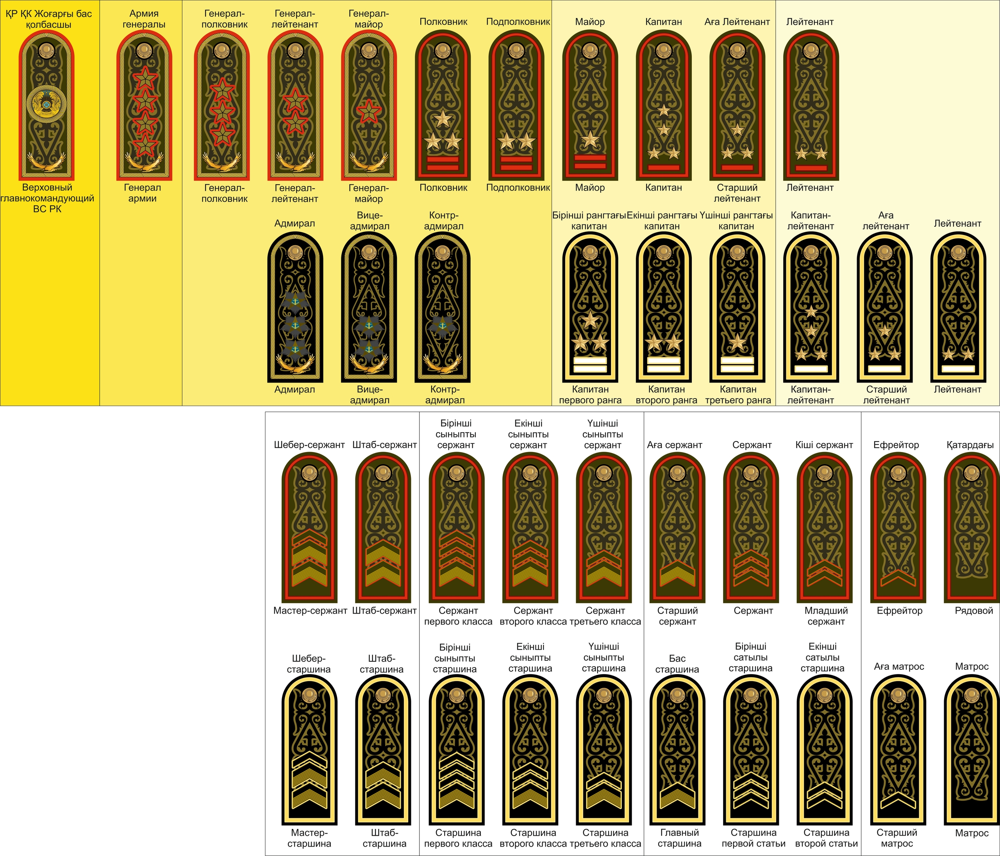

Әскери негіздер · №1 · Атақтар Military Basics · No.1 · Ranks Воинские основы · №1 · Звания
Қатардағы жауынгерден армия генералына дейін — погондағы айырым белгілері бойынша. From private to army general — read by the insignia on the shoulder boards. От рядового до генерала армии — по знакам различия на погонах.

Әскери атақ — әскери қызметшіге заңмен бекітілген тәртіппен берілетін жеке атақ. Ол қызметтік жағдайды, бағыну тәртібін (старшинство), құқықтар мен міндеттер аясын айқындайды. Погондар — иыққа тағылатын айырым белгілері: олардың түсі, жолақтары мен жұлдыздары арқылы атақ пен әскер тегін бір қарағанда ажыратуға болады. A military rank is a personal title conferred on a service member under a procedure fixed by law. It defines service standing, the order of seniority, and the scope of rights and duties. Shoulder boards are the insignia worn on the shoulders: their colour, stripes and stars let you identify the rank and branch at a glance. Воинское звание — персональное звание, присваиваемое военнослужащему в установленном законом порядке. Оно определяет служебное положение, старшинство, объём прав и обязанностей. Погоны — знаки различия на плечах: по их цвету, просветам и звёздам с первого взгляда определяют звание и принадлежность к роду войск.
Атақтар екі қатарға бөлінеді: әскери (құрлық) — сарбаздан армия генералына дейін, және кеме (флот) — матростан флот адмиралына дейін. Әр атақтың өзіне сәйкес кеме баламасы болады (мысалы, сержант → старшина 1-статья). Ranks fall into two parallel sets: army (ground) — from private to army general, and naval (fleet) — from seaman to fleet admiral. Each army rank has a matching naval equivalent (for example, sergeant → petty officer 1st class). Звания делятся на два параллельных ряда: войсковые (армейские) — от рядового до генерала армии, и корабельные (флот) — от матроса до адмирала флота. Каждому армейскому званию соответствует корабельный аналог (например, сержант → старшина 1-й статьи).
Барлық атақтар бес негізгі құрамға топтастырылады — төменнен жоғарыға қарай: All ranks are grouped into five main categories — from lowest to highest: Все звания сведены в пять основных составов — от младшего к высшему:
СарбаздарSoldiersСолдаты
қатардағы, ефрейторprivate, lance corporalрядовой, ефрейтор
СержанттарSergeantsСержанты
кіші командирлерjunior commandersмладшие командиры
ПрапорщиктерWarrant officersПрапорщики
мамандар, шаруашылықspecialists, logisticsспециалисты, хозчасть
Кіші офицерлерJunior officersМладшие офицеры
взвод · рота командирлеріplatoon · company levelвзвод · рота
Аға офицерлерSenior officersСтаршие офицеры
батальон · полк командирлеріbattalion · regiment levelбатальон · полк
Жоғары офицерлер (генералдар)General officersВысшие офицеры (генералы)
бригада · корпус · ҚКbrigade · corps · armed forcesбригада · корпус · ВС
| АтақRankЗвание | Погондағы белгіInsigniaЗнак на погоне | Әдеттегі лауазымTypical postТиповая должность |
|---|---|---|
| Қатардағы жауынгерPrivateРядовой | белгісіз (таза погон)none (clean board)без знаков (чистый погон) | жауынгер, нөмірrifleman, crew numberстрелок, номер расчёта |
| ЕфрейторLance CorporalЕфрейтор | 1 көлденең жолақ (лычка)1 transverse chevron1 поперечная лычка | тәжірибелі жауынгерexperienced soldierопытный солдат |
| Кіші сержантJunior SergeantМладший сержант | 2 жолақ2 chevrons2 лычки | бөлімше командиріsquad leaderкомандир отделения |
| СержантSergeantСержант | 3 жолақ3 chevrons3 лычки | бөлімше · есеп командиріsquad · gun commanderкомандир отделения · расчёта |
| Аға сержантSenior SergeantСтарший сержант | 1 жалпақ (кең) жолақ1 wide stripe1 широкая лычка | взвод командирінің көмекшісіdeputy platoon leaderзамкомвзвода |
| СтаршинаMaster SergeantСтаршина | 1 бойлық (Т-тәрізді) жолақ1 longitudinal (T-shaped) stripe1 продольная (Т-образная) лычка | рота старшинасыcompany sergeant majorстаршина роты |
Сержанттар құрамынан кейін келесі саты — прапорщик және аға прапорщик: погонда жолақсыз, бойымен орналасқан ұсақ жұлдыздар (1 және 2). Above the sergeants comes the next step — warrant officer and senior warrant officer: small stars set along the board (1 and 2), with no stripe. Над сержантским составом — следующая ступень: прапорщик и старший прапорщик: мелкие звёзды вдоль погона (1 и 2), без просвета.
| ТопGroupГруппа | АтақRankЗвание | ЖұлдыздарStarsЗвёзды | Әдеттегі лауазымTypical postТиповая должность |
|---|---|---|---|
| Кіші офицерлерJuniorМладшие 1 жолақ (просвет), кіші жұлдыздар1 stripe, small stars1 просвет, малые звёзды |
ЛейтенантLieutenantЛейтенант | ★ ★ (2)★ ★ (2)★ ★ (2) | взвод командиріplatoon commanderкомандир взвода |
| Аға лейтенантSenior LieutenantСтарший лейтенант | ★ ★ ★ (3)★ ★ ★ (3)★ ★ ★ (3) | взвод · рота орынбасарыplatoon · deputy companyвзвод · зам. командира роты | |
| КапитанCaptainКапитан | ★ ★ ★ ★ (4)★ ★ ★ ★ (4)★ ★ ★ ★ (4) | рота командиріcompany commanderкомандир роты | |
| Аға офицерлерSeniorСтаршие 2 жолақ, ірі жұлдыздар2 stripes, large stars2 просвета, крупные звёзды |
МайорMajorМайор | ★ (1)★ (1)★ (1) | батальон орынбасарыdeputy battalion cmdrзам. командира батальона |
| ПодполковникLieutenant ColonelПодполковник | ★ ★ (2)★ ★ (2)★ ★ (2) | батальон командиріbattalion commanderкомандир батальона | |
| ПолковникColonelПолковник | ★ ★ ★ (3)★ ★ ★ (3)★ ★ ★ (3) | полк · бригада командиріregiment · brigade cmdrкомандир полка · бригады |
Заңдылық: бір топ ішінде жұлдыз саны өскен сайын атақ көтеріледі; келесі топқа өткенде жолақ саны артып, жұлдыз қайтадан біреуден басталады. The pattern: within one group the rank rises as the number of stars grows; on moving to the next group the number of stripes increases and the star count restarts from one. Закономерность: внутри группы звание растёт с числом звёзд; при переходе в следующую группу добавляется просвет, а счёт звёзд начинается снова с одной.
Генералдардың погонында жолақ (просвет) болмайды — тек ірі көмкерілген жұлдыздар бойымен орналасады. A general's shoulder board has no stripes — only large embroidered stars arranged along the board. У генеральских погон нет просветов — только крупные звёзды, расположенные вдоль погона.
Генерал-майорMajor GeneralГенерал-майор
★ — 1 ірі жұлдыз★ — 1 large star★ — 1 крупная звезда
Генерал-лейтенантLieutenant GeneralГенерал-лейтенант
★ ★ — 2 жұлдыз★ ★ — 2 stars★ ★ — 2 звезды
Генерал-полковникColonel GeneralГенерал-полковник
★ ★ ★ — 3 жұлдыз★ ★ ★ — 3 stars★ ★ ★ — 3 звезды
Армия генералыArmy GeneralГенерал армии
★ ★ ★ ★ — 4 жұлдыз · жоғары атақ★ ★ ★ ★ — 4 stars · highest rank★ ★ ★ ★ — 4 звезды · высшее звание
Кеме қатарында оларға адмирал атақтары сәйкес келеді: контр-адмирал, вице-адмирал, адмирал, флот адмиралы. In the naval set these correspond to admiral ranks: rear admiral, vice admiral, admiral, fleet admiral. В корабельном ряду им соответствуют адмиральские звания: контр-адмирал, вице-адмирал, адмирал, адмирал флота.